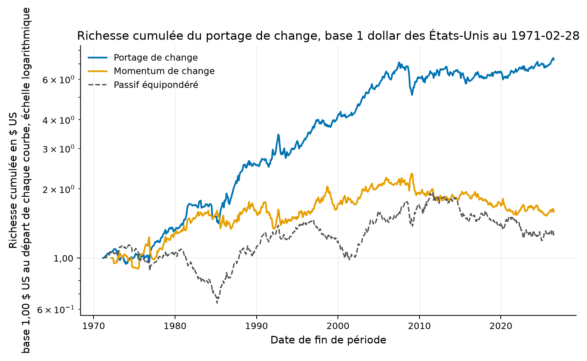
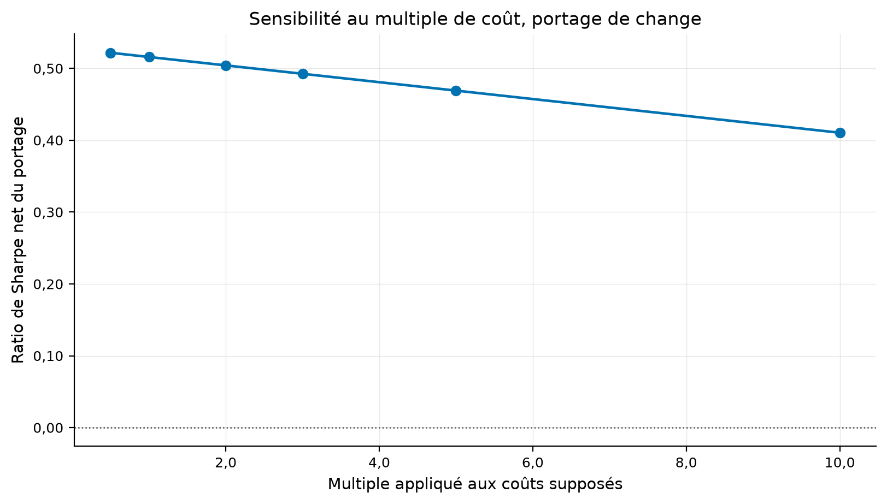
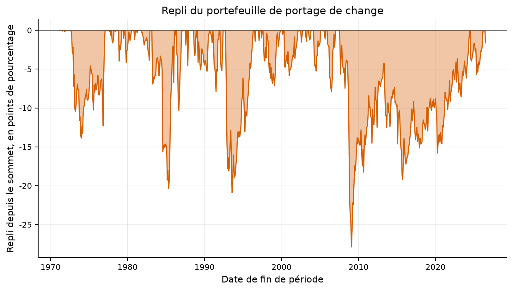
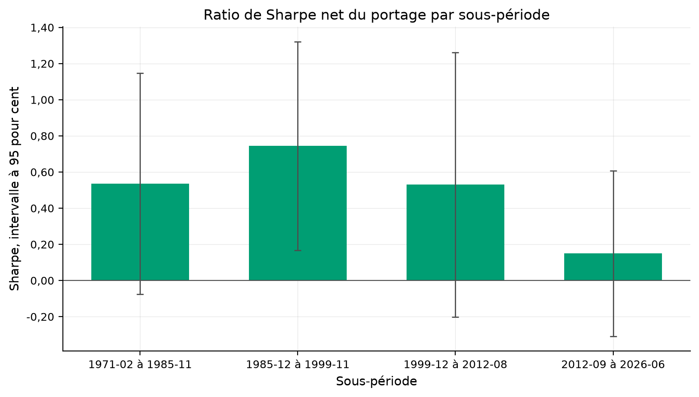
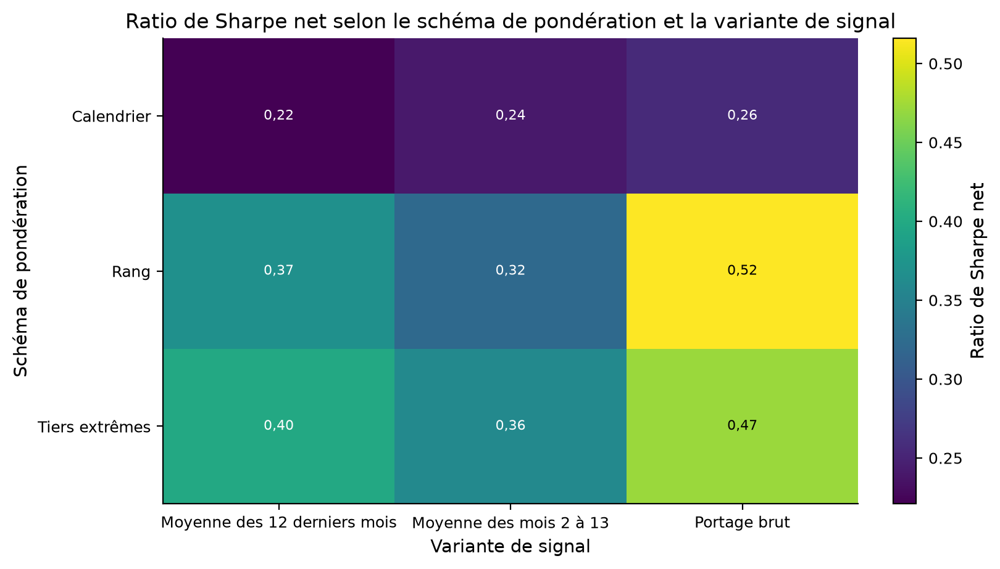
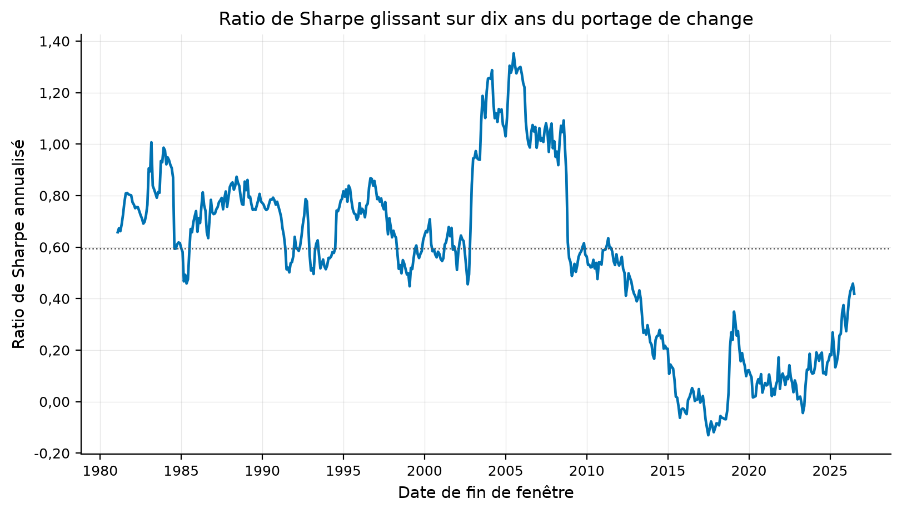
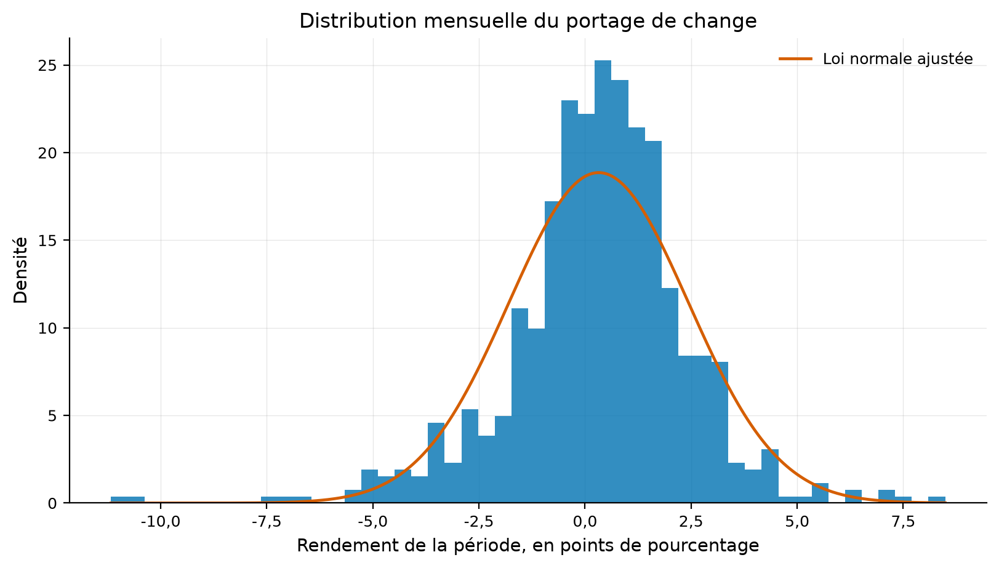
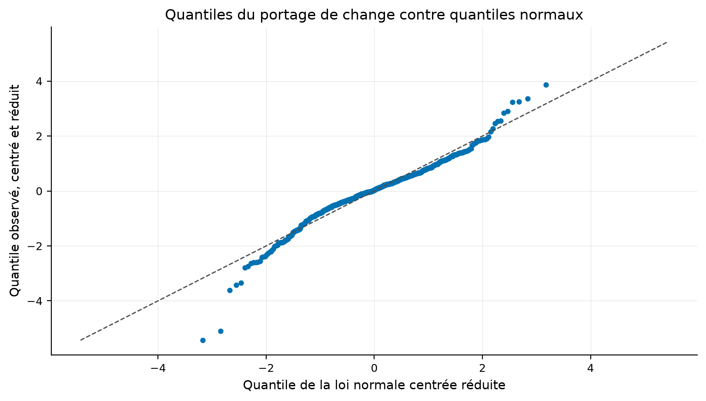
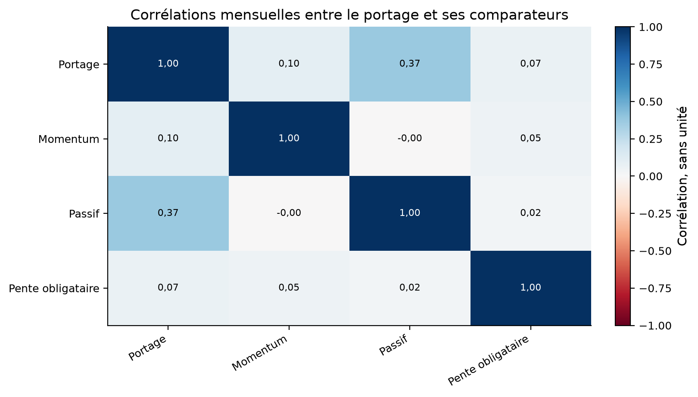

Verdict : REPLICATED
Le portage, l'écart de taux entre deux devises, prédit-il le rendement futur du change, et le portefeuille trié par portage paie-t-il son ratio de Sharpe par une asymétrie négative ?
Koijen, Moskowitz, Pedersen et Vrugt (2018), Carry, Journal of Financial Economics 127(2). Les chiffres cibles viennent du manuscrit accepté déposé au CBS Research Portal.
Le portage de chaque devise vaut l'écart de taux court, équation (7). Les devises sont classées par portage, le portefeuille est long les rangs hauts et court les rangs bas, à somme nulle et deux dollars d'exposition brute.
Dix taux de change quotidiens et 11 taux interbancaires à trois mois, tous chez FRED. Trois des quatre classes d'actifs de l'article ne sont pas reproductibles sur données gratuites, et le tableau des sources le déclare.
| currency | role | fred_series | quote_convention | start | end | n_rows |
|---|---|---|---|---|---|---|
| Dollar australien | change au comptant | DEXUSAL | usd_per_unit | 1971-01-04 | 2026-08-28 | 13950 |
| Dollar canadien | change au comptant | DEXCAUS | unit_per_usd | 1971-01-04 | 2026-08-28 | 13963 |
| Franc suisse | change au comptant | DEXSZUS | unit_per_usd | 1971-01-04 | 2026-08-28 | 13957 |
| Couronne danoise | change au comptant | DEXDNUS | unit_per_usd | 1971-01-04 | 2026-08-28 | 13956 |
| Euro | change au comptant | DEXUSEU | usd_per_unit | 1999-01-04 | 2026-08-28 | 6936 |
| Livre sterling | change au comptant | DEXUSUK | usd_per_unit | 1971-01-04 | 2026-08-28 | 13957 |
| Yen | change au comptant | DEXJPUS | unit_per_usd | 1971-01-04 | 2026-08-28 | 13951 |
| Couronne norvégienne | change au comptant | DEXNOUS | unit_per_usd | 1971-01-04 | 2026-08-28 | 13956 |
| Dollar néo-zélandais | change au comptant | DEXUSNZ | usd_per_unit | 1971-01-04 | 2026-08-28 | 13941 |
| Couronne suédoise | change au comptant | DEXSDUS | unit_per_usd | 1971-01-04 | 2026-08-28 | 13956 |
| Dollar australien | taux interbancaire à trois mois | IR3TIB01AUM156N | pourcentage annualisé | 1968-01-31 | 2026-06-30 | 702 |
| Dollar canadien | taux interbancaire à trois mois | IR3TIB01CAM156N | pourcentage annualisé | 1956-01-31 | 2026-06-30 | 846 |
| Franc suisse | taux interbancaire à trois mois | IR3TIB01CHM156N | pourcentage annualisé | 1999-07-31 | 2026-06-30 | 324 |
| Couronne danoise | taux interbancaire à trois mois | IR3TIB01DKM156N | pourcentage annualisé | 1987-01-31 | 2026-06-30 | 474 |
| Euro | taux interbancaire à trois mois | IR3TIB01EZM156N | pourcentage annualisé | 1994-01-31 | 2026-01-31 | 385 |
| Livre sterling | taux interbancaire à trois mois | IR3TIB01GBM156N | pourcentage annualisé | 1957-01-31 | 2026-01-31 | 829 |
| Yen | taux interbancaire à trois mois | IR3TIB01JPM156N | pourcentage annualisé | 2002-04-30 | 2026-05-31 | 290 |
| Couronne norvégienne | taux interbancaire à trois mois | IR3TIB01NOM156N | pourcentage annualisé | 1979-01-31 | 2026-06-30 | 570 |
| Dollar néo-zélandais | taux interbancaire à trois mois | IR3TIB01NZM156N | pourcentage annualisé | 1973-12-31 | 2026-06-30 | 631 |
| Couronne suédoise | taux interbancaire à trois mois | IR3TIB01SEM156N | pourcentage annualisé | 1982-01-31 | 2026-06-30 | 534 |
| Dollar des États-Unis | taux interbancaire à trois mois | IR3TIB01USM156N | pourcentage annualisé | 1964-06-30 | 2026-06-30 | 744 |
| asset_class | what_the_paper_needs | searched | verdict | why |
|---|---|---|---|---|
| Matières premières | Le prix au comptant synthétique et le prix à terme de 24 contrats, mois par mois, de janvier 1980 à septembre 2012, plus les conventions de report du Goldman Sachs Commodity Index | turtletrader.com (séries continues ajustées), base des prix des matières premières de la Banque mondiale (Pink Sheet, prix au comptant mensuels seuls), Cboe (données historiques limitées à ses propres contrats), Nasdaq Data Link (base CHRIS non accessible depuis la reprise de Quandl) | non trouvé au 2026-09-02 | Aucune source gratuite ne publie la structure par terme, c'est-à-dire le prix de plusieurs échéances à la même date. Une série continue ajustée écrase justement l'écart entre échéances qui EST le portage. |
| Indices actions | Le dividende attendu sur un mois et le taux sans risque local de 13 marchés, ou le prix du contrat à terme le plus proche interpolé à un mois, de mars 1988 à septembre 2012 | Yahoo Finance (indices de dividendes RÉALISÉS du seul S&P 500, ^DVS et ^DIVD), CME Group (contrats sur dividendes, cotations courantes seulement), OptionMetrics (dividende implicite, payant) | non trouvé au 2026-09-02 | Le portage actions exige le dividende ATTENDU, pas le dividende versé. Les séries gratuites publient le second, et sur un seul marché. |
| Options d'achat et de vente sur indices | La surface de volatilité implicite de 10 indices américains, par delta et par échéance, de janvier 1996 à décembre 2011, avec volume et position ouverte | OptionMetrics IvyDB, la source nommée par l'article | non trouvé au 2026-09-02 | OptionMetrics est vendu sous licence universitaire ou commerciale. Aucun équivalent gratuit ne remonte à 1996 avec les deux groupes de delta exigés. |
La stratégie vit dans quantlab.strategies.carry. Le sens de cotation de chaque série est déclaré dans config.yaml, et un test le confronte à la règle de nommage de FRED.
La parité couverte des taux tient, donc l'écart de taux vaut les points de report. Le taux à trois mois sert de taux à un mois. Le collatéral rapporte le taux local.
Sur la fenêtre de l'article, le ratio de Sharpe du portage de change vaut 0.60 contre 0,68 publié, et le coefficient de panel vaut 1.08 contre 1,09 publié.
| quantity | published | ours | absolute_error | relative_error | tolerance | tolerance_kind | verdict | source |
|---|---|---|---|---|---|---|---|---|
| ratio de Sharpe du portage de change | 0.68 | 0.601949 | 0.078051 | 0.114781 | 0.5 | relative | répliqué | Koijen et coauteurs (2018), tableau 2, panneau A, colonne Devises |
| volatilité annualisée du portage, en pourcentage | 7.80 | 8.361311 | 0.561311 | 0.071963 | 0.5 | relative | répliqué | Koijen et coauteurs (2018), tableau 2, panneau A, colonne Devises |
| asymétrie du portage de change | -0.68 | -0.666115 | 0.013885 | 0.020419 | 0.5 | relative | répliqué | Koijen et coauteurs (2018), tableau 2, panneau A, colonne Devises |
| coefficient c de l'équation (23) | 1.09 | 1.084345 | 0.005655 | 0.005188 | 0.5 | relative | répliqué | Koijen et coauteurs (2018), tableau 4, ligne Devises |
| statistique t du coefficient c | 2.69 | 2.159003 | 0.530997 | 0.197396 | 0.5 | relative | répliqué | Koijen et coauteurs (2018), tableau 4, ligne Devises |
| series | n_months | start | end | annual_return_pct | annual_vol_pct | sharpe | skewness | excess_kurtosis | var_pct | expected_shortfall_pct | max_drawdown_pct | worst_month_pct | published_sharpe |
|---|---|---|---|---|---|---|---|---|---|---|---|---|---|
| Portage de change, fenêtre de l'article | 347 | 1983-11-30 | 2012-09-30 | 5.033085 | 8.361311 | 0.601949 | -0.666115 | 2.852074 | 3.657521 | 5.520952 | -27.870665 | -11.172177 | 0.68 |
| Passif équipondéré, fenêtre de l'article | 347 | 1983-11-30 | 2012-09-30 | 3.192844 | 8.167658 | 0.390913 | -0.201246 | 0.936313 | 3.535547 | 5.126275 | -32.863553 | -9.036833 | 0.36 |
| Momentum de change, fenêtre de l'article | 347 | 1983-11-30 | 2012-09-30 | 0.872578 | 8.828714 | 0.098834 | -0.209272 | 1.186765 | 4.213926 | 5.855953 | -24.084355 | -7.941107 | |
| Portage de change, échantillon complet | 664 | 1971-02-28 | 2026-06-30 | 3.866475 | 7.328826 | 0.527571 | -0.570273 | 3.276297 | 3.473245 | 4.936548 | -27.870665 | -11.172177 | 0.68 |
| Passif équipondéré, échantillon complet | 664 | 1971-02-28 | 2026-06-30 | 0.684471 | 7.477170 | 0.091541 | -0.092362 | 0.852900 | 3.412769 | 4.688090 | -44.076193 | -9.036833 | 0.36 |
| Momentum de change, échantillon complet | 652 | 1972-02-29 | 2026-06-30 | 1.185846 | 8.104565 | 0.146318 | -0.250113 | 2.846655 | 3.744426 | 5.552313 | -34.542060 | -11.311868 |
| fixed_effects | window | coefficient | stderr | tstat | tstat_vs_one | n_observations | n_periods | r_squared | published_c | published_t |
|---|---|---|---|---|---|---|---|---|---|---|
| actif et date | fenêtre de l'article | 1.084345 | 0.502244 | 2.159003 | 0.167937 | 3177 | 346 | 0.005282 | 1.09 | 2.69 |
| actif seulement | fenêtre de l'article | 1.566219 | 0.530661 | 2.951449 | 1.067007 | 3177 | 346 | 0.011874 | 1.09 | 2.69 |
| date seulement | fenêtre de l'article | 1.086250 | 0.377108 | 2.880476 | 0.228714 | 3177 | 346 | 0.009198 | 1.09 | 2.69 |
| aucun | fenêtre de l'article | 1.451321 | 0.404827 | 3.585039 | 1.114849 | 3177 | 346 | 0.018395 | 1.09 | 2.69 |
| actif et date | échantillon complet | 1.188391 | 0.371293 | 3.200679 | 0.507390 | 5785 | 664 | 0.006399 | 1.09 | 2.69 |
| actif et date | après septembre 2012 | 0.302699 | 1.030955 | 0.293610 | -0.676364 | 1782 | 163 | 0.000101 | 1.09 | 2.69 |
Tous les chiffres portent leur échantillon et leur base de coût dans le tableau ci-dessous.
| metric | value | sample | cost_basis |
|---|---|---|---|
| sharpe_portage_fenetre_article | 0.601949 | IS | gross |
| rendement_portage_fenetre_article_pct | 5.033085 | IS | gross |
| volatilite_portage_fenetre_article_pct | 8.361311 | IS | gross |
| asymetrie_portage_fenetre_article | -0.666115 | IS | gross |
| aplatissement_portage_fenetre_article | 2.852074 | IS | gross |
| panel_c_fenetre_article | 1.084345 | IS | gross |
| panel_t_fenetre_article | 2.159003 | IS | gross |
| panel_c_echantillon_complet | 1.188391 | VALIDATION | gross |
| panel_t_echantillon_complet | 3.200679 | VALIDATION | gross |
| sharpe_portage_complet | 0.527571 | VALIDATION | gross |
| asymetrie_portage_complet | -0.570273 | VALIDATION | gross |
| asymetrie_momentum_complet | -0.250113 | VALIDATION | gross |
| perte_esperee_portage_pct | 4.936548 | VALIDATION | gross |
| perte_esperee_momentum_pct | 5.020866 | VALIDATION | gross |
| sharpe_hors_echantillon_net | 0.144284 | FINAL_HOLDOUT | net |
| rotation_annualisee | 4.281578 | VALIDATION | gross |
| cout_de_rentabilite_bps | 90.304909 | VALIDATION | gross |
| probabilite_de_surapprentissage | 0.100000 | VALIDATION | net |
| sharpe_degonfle | 0.149198 | FINAL_HOLDOUT | net |
| t_apres_correction | 0.000000 | FINAL_HOLDOUT | net |
| part_de_sous_periodes_positives | 1.000000 | VALIDATION | net |
| correlation_avec_le_passif | 0.369527 | VALIDATION | gross |
| cpcv_sharpe_moyen | 0.448398 | OOS | net |
| cpcv_part_de_chemins_negatifs | 0.000000 | OOS | net |
| sharpe_pente_obligataire | 0.336108 | VALIDATION | gross |
| panel_c_pente_obligataire | 1.353011 | VALIDATION | gross |
| sharpe_jambe_neutre_au_dollar | 0.482876 | VALIDATION | gross |
| asymetrie_jambe_neutre_au_dollar | -0.204728 | VALIDATION | gross |
| sharpe_jambe_de_dollar | 0.298755 | VALIDATION | gross |
| asymetrie_jambe_de_dollar | -0.306037 | VALIDATION | gross |
| series | n_months | start | end | annual_return_pct | annual_vol_pct | sharpe | skewness | excess_kurtosis | var_pct | expected_shortfall_pct | max_drawdown_pct | worst_month_pct | volatility_scale |
|---|---|---|---|---|---|---|---|---|---|---|---|---|---|
| Portage de change | 664 | 1971-02-28 | 2026-06-30 | 3.866475 | 7.328826 | 0.527571 | -0.570273 | 3.276297 | 3.473245 | 4.936548 | -27.870665 | -11.172177 | 1.000000 |
| Momentum de change, mis à la volatilité du portage | 652 | 1972-02-29 | 2026-06-30 | 1.072341 | 7.328826 | 0.146318 | -0.250113 | 2.846655 | 3.386024 | 5.020866 | -31.626476 | -10.229138 | 0.904284 |
| Passif équipondéré | 664 | 1971-02-28 | 2026-06-30 | 0.684471 | 7.477170 | 0.091541 | -0.092362 | 0.852900 | 3.412769 | 4.688090 | -44.076193 | -9.036833 | 1.000000 |

La rotation annualisée vaut 4.28 et le coût qui annule le rendement brut vaut 90 points de base.
| cost_bps | n_months | gross_annual_pct | net_annual_pct | net_sharpe | annual_turnover | holding_period_years | breakeven_cost_bps |
|---|---|---|---|---|---|---|---|
| 0.0 | 664 | 3.866475 | 3.866475 | 0.527571 | 4.281578 | 0.233559 | 90.304909 |
| 1.0 | 664 | 3.866475 | 3.823659 | 0.521730 | 4.281578 | 0.233559 | 90.304909 |
| 2.0 | 664 | 3.866475 | 3.780843 | 0.515888 | 4.281578 | 0.233559 | 90.304909 |
| 5.0 | 664 | 3.866475 | 3.652396 | 0.498348 | 4.281578 | 0.233559 | 90.304909 |
| 10.0 | 664 | 3.866475 | 3.438317 | 0.469079 | 4.281578 | 0.233559 | 90.304909 |

Le schéma de pondération, la variante de signal, le délai d'exécution et le taux employé sont balayés, et chaque cellule compte comme un essai.
| label | start | end | n_months | carry_cumulative_pct | momentum_cumulative_pct | passive_cumulative_pct | carry_worst_month_pct |
|---|---|---|---|---|---|---|---|
| Recul 1, annexe D | 1972-08-31 | 1975-09-30 | 38 | -7.860763 | 9.328909 | -6.752225 | -5.132124 |
| Recul 2, annexe D | 1980-03-31 | 1982-06-30 | 28 | 25.747852 | 14.053847 | -17.655696 | -1.208836 |
| Recul 3, annexe D | 2008-08-31 | 2009-02-28 | 7 | -22.776627 | 8.726266 | -20.587317 | -10.454806 |
| Crise du mécanisme de change européen | 1992-08-31 | 1992-10-31 | 3 | -2.379311 | -1.170254 | -5.969129 | -7.313716 |
| Pandémie | 2020-01-31 | 2020-03-31 | 3 | -7.713978 | 7.288161 | -6.591769 | -5.185229 |
| weighting | signal_variant | n_months | net_annual_pct | net_sharpe | net_tstat | skewness | annual_turnover |
|---|---|---|---|---|---|---|---|
| rank | carry | 664 | 3.780843 | 0.515888 | 3.416314 | -0.570450 | 4.281578 |
| rank | carry1_12 | 653 | 2.617773 | 0.368435 | 2.373158 | -0.552556 | 2.004091 |
| rank | carry2_13 | 652 | 2.283840 | 0.321966 | 2.070935 | -0.601372 | 2.003028 |
| sign | carry | 664 | 2.612125 | 0.256609 | 1.824579 | -0.048226 | 2.894493 |
| sign | carry1_12 | 653 | 2.206253 | 0.220953 | 1.567026 | -0.036842 | 1.759092 |
| sign | carry2_13 | 652 | 2.374753 | 0.241394 | 1.731770 | -0.094302 | 1.735874 |
| tercile | carry | 664 | 3.916870 | 0.471933 | 3.168301 | -0.674116 | 5.080804 |
| tercile | carry1_12 | 653 | 3.198324 | 0.398442 | 2.582246 | -0.621970 | 2.261236 |
| tercile | carry2_13 | 652 | 2.893925 | 0.359472 | 2.372303 | -0.674825 | 2.266590 |
| label | start | end | n_observations | total_return | cagr | volatility | sharpe | sharpe_se_iid | sharpe_se_lo | t_stat | max_drawdown | hit_rate |
|---|---|---|---|---|---|---|---|---|---|---|---|---|
| 1971-02 à 1985-11 | 1971-02-28 | 1985-11-30 | 178 | 0.704091 | 0.036588 | 0.072076 | 0.535575 | 0.261192 | 0.312309 | 1.714889 | -0.206519 | 0.651685 |
| 1985-12 à 1999-11 | 1985-12-31 | 1999-11-30 | 168 | 1.318436 | 0.061904 | 0.085849 | 0.744000 | 0.270326 | 0.294808 | 2.523676 | -0.209468 | 0.583333 |
| 1999-12 à 2012-08 | 1999-12-31 | 2012-08-31 | 153 | 0.602463 | 0.037676 | 0.075210 | 0.530355 | 0.281692 | 0.373462 | 1.420105 | -0.279336 | 0.620915 |
| 2012-09 à 2026-06 | 2012-09-30 | 2026-06-30 | 165 | 0.099079 | 0.006894 | 0.056826 | 0.149350 | 0.269805 | 0.234019 | 0.638197 | -0.156953 | 0.581818 |
| univers | n_months_full | n_months_paper | mean_net_foreign_weight | paper_sharpe | paper_skewness | full_sharpe | full_skewness | paper_panel_c | paper_panel_t | full_panel_c | full_panel_t | published_sharpe | published_skewness | published_panel_c |
|---|---|---|---|---|---|---|---|---|---|---|---|---|---|---|
| onze actifs, le dollar classé comme les autres | 664 | 347 | 1.360986e-01 | 0.601949 | -0.666115 | 0.527571 | -0.570273 | 1.084345 | 2.159003 | 1.188391 | 3.200679 | 0.68 | -0.68 | 1.09 |
| dix actifs, le dollar tenu pour numéraire seul | 629 | 347 | -4.192019e-19 | 0.488146 | -0.521880 | 0.532329 | 0.252609 | 0.897299 | 1.699758 | 1.075332 | 2.693347 | 0.68 | -0.68 | 1.09 |



Après septembre 2012, fin de l'échantillon de l'article, le ratio de Sharpe net tombe à 0.14.
| series | n_months | start | end | annual_return_pct | annual_vol_pct | sharpe | skewness | excess_kurtosis | var_pct | expected_shortfall_pct | max_drawdown_pct | worst_month_pct | panel_c | panel_t | n_panel_observations | published_sharpe | published_panel_c | published_panel_t | substitution |
|---|---|---|---|---|---|---|---|---|---|---|---|---|---|---|---|---|---|---|---|
| Pente obligataire, substitution déclarée | 665 | 1971-02-28 | 2026-06-30 | 2.370113 | 7.051635 | 0.336108 | 1.739765 | 25.648718 | 2.222199 | 4.176862 | -27.565045 | -12.795619 | 1.353011 | 3.119717 | 5721 | 1.03 | 0.81 | 4.91 | La descente de courbe de l'équation (13) est OMISE. Le portage retenu est la seule pente, et le rendement est approché par la duration. |
| statistic | value |
|---|---|
| count | 7.000000 |
| mean | 0.448398 |
| median | 0.439764 |
| std | 0.025459 |
| min | 0.434035 |
| max | 0.505930 |
| quantile_low | 0.435754 |
| quantile_high | 0.486080 |
| quantile_low_level | 0.050000 |
| quantile_high_level | 0.950000 |
| negative_share | 0.000000 |
| distinct_paths | 3.000000 |

Le ratio de Sharpe dégonflé, la probabilité de surapprentissage et la validation croisée combinatoire purgée sont rapportés dans les tableaux joints.
| family | n_trials |
|---|---|
| comparateur | 1 |
| panel | 4 |
| couts | 5 |
| multiple | 6 |
| sweep | 9 |
| delai | 3 |
| numeraire | 1 |
| taux | 1 |
| obligataire | 1 |
| jambes | 2 |


Le portage est comparé à un momentum de change de même construction et à l'exposition passive équipondérée aux dix devises.
| series | n_months | Portage | Momentum | Passif | Pente obligataire |
|---|---|---|---|---|---|
| Portage | 652 | 1.000000 | 0.098247 | 0.369194 | 0.069953 |
| Momentum | 652 | 0.098247 | 1.000000 | -0.004143 | 0.048198 |
| Passif | 652 | 0.369194 | -0.004143 | 1.000000 | 0.024137 |
| Pente obligataire | 652 | 0.069953 | 0.048198 | 0.024137 | 1.000000 |
| series | n_months | start | end | annual_return_pct | annual_vol_pct | sharpe | skewness | excess_kurtosis | var_pct | expected_shortfall_pct | max_drawdown_pct | worst_month_pct | mean_net_foreign_weight | identity_max_error |
|---|---|---|---|---|---|---|---|---|---|---|---|---|---|---|
| Portage complet | 664 | 1971-02-28 | 2026-06-30 | 3.866475 | 7.328826 | 0.527571 | -0.570273 | 3.276297 | 3.473245 | 4.936548 | -27.870665 | -11.172177 | 0.136099 | 1.387779e-17 |
| Jambe neutre au dollar | 664 | 1971-02-28 | 2026-06-30 | 3.150693 | 6.524844 | 0.482876 | -0.204728 | 4.015680 | 2.881403 | 4.302045 | -25.689715 | -9.249895 | 0.000000 | 1.387779e-17 |
| Jambe de dollar | 664 | 1971-02-28 | 2026-06-30 | 0.715782 | 2.395885 | 0.298755 | -0.306037 | 5.599667 | 1.054619 | 1.668941 | -15.782269 | -3.898001 | 0.136099 | 1.387779e-17 |

Trois classes d'actifs sur quatre manquent. Le portage obligataire est approché par la pente, ce qui omet la descente de courbe. L'univers est celui de dix monnaies développées, contre vingt monnaies dans l'article.
Le verdict est déduit des seuils écrits dans config.yaml, sans arbitrage.
REPLICATED